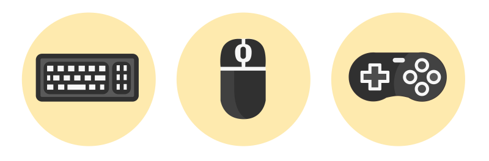
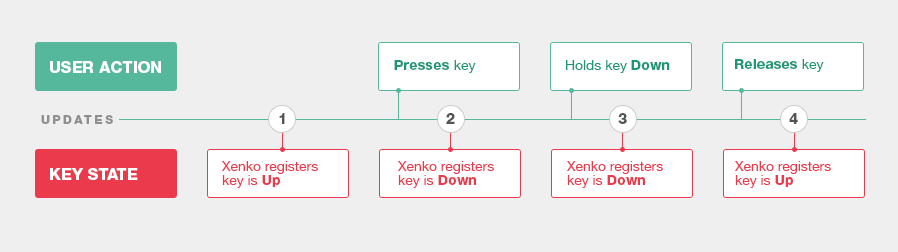
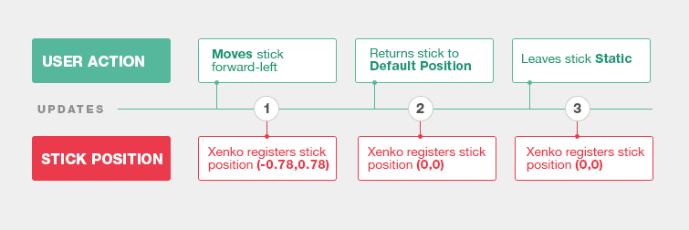
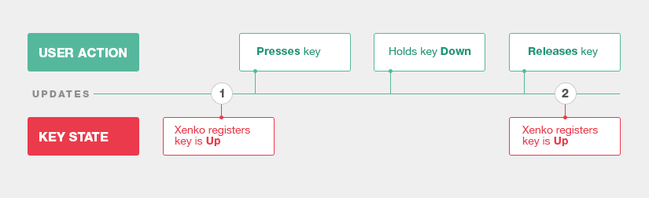
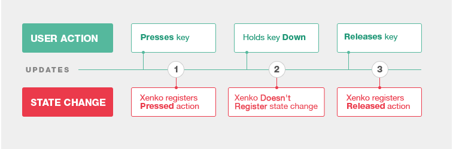
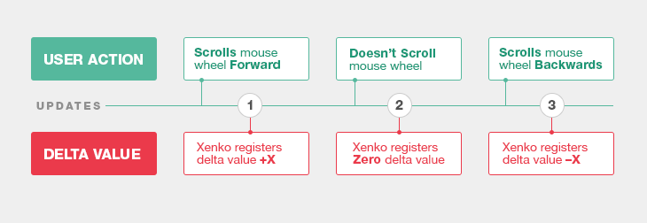
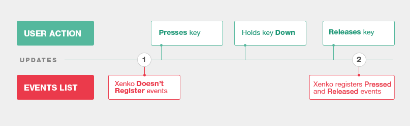

Input
Beginner Programmer
Users interact with games and applications using input devices such as gamepads, mice, and keyboards. Every interactive application must support at least one input device.

Stride handles input entirely via scripts. There are low-level and high-level APIs to handle different input types:
Low-level APIs are close to hardware, so they have lower latency. These allow fast processing of the input from pointers, keyboards, mouse, gamepads, and some sensors.
High-level APIs interpret input for you, so they have higher latency. These APIs are used for gestures and some sensors.
There are also special APIs for some sensors and virtual buttons.
Handle input
Handle input with the InputManager class. You can access this class from a script with its properties and methods.
To check whether a particular input device is available, use the corresponding InputManager property. For example, to check if a mouse is connected, use Input.HasMouse.
After you check the device availability, there are four ways to handle input in Stride.
Query state
You can query the state of digital keys and buttons (ie Up or Down) and the numeric values of analog buttons and sensors. For example, DownKeys gets a list of the keys that were in the state Down in the last update.


Sometimes a user performs more than one action between updates. If there's no state change between the updates (the end result is the same), Stride registers no action:

Query a state change
You can query the change of state of buttons and keys since the previous update. In this case, you don't get the list of all buttons and keys, but have to query each button and key separately.
For digital buttons and keys, query if the button or key was Pressed, Down or Released in the last update.

For mouse positions and mouse wheel scrolling, query Delta Values since the previous update:

Sometimes a user performs several actions between two updates. If there's no state change between two updates (the end result is the same), Stride registers no action.
Query the list of events
For pointers, gestures, and keyboards, you can query all the events that happened in the last update.

Note
Even if a user performs several actions between two updates, Stride registers all these events.
Use virtual buttons
You can use virtual buttons to associate input to actions rather than physical keys, then let the user define their own keys. For more information, see virtual buttons.